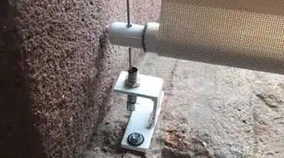
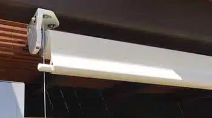
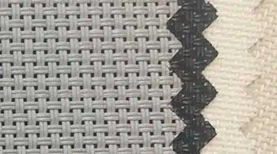
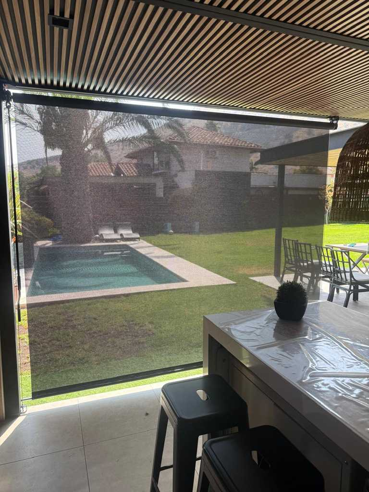
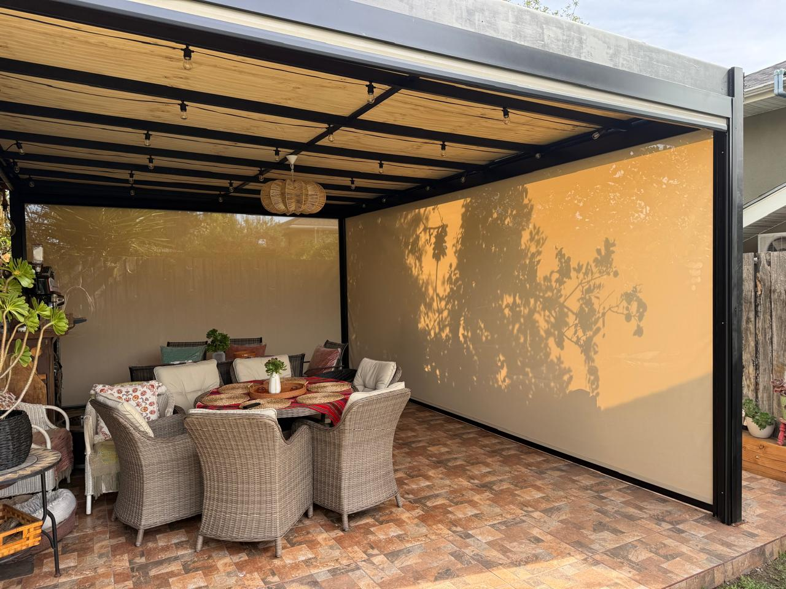
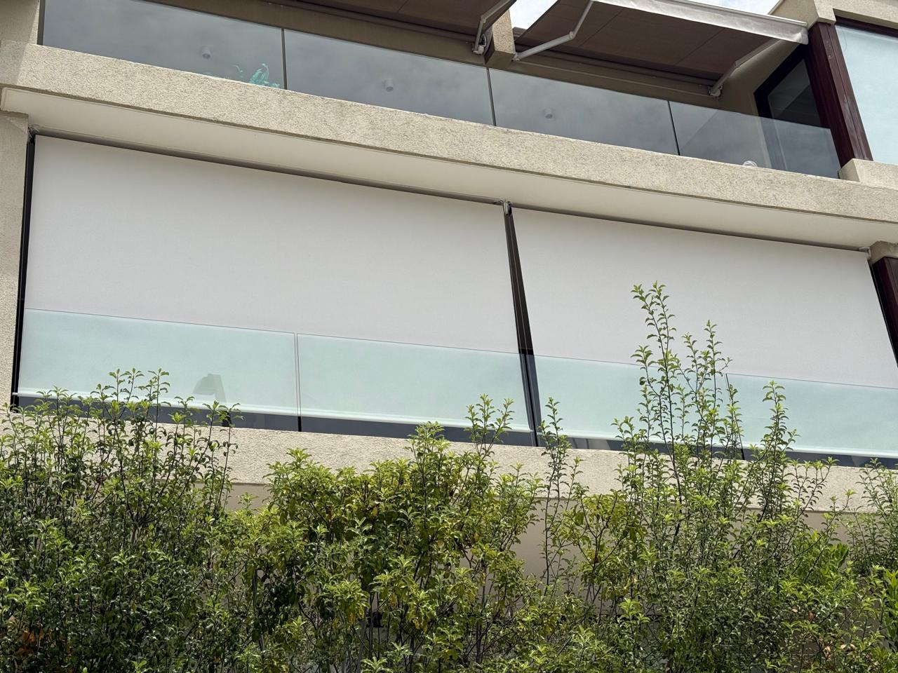
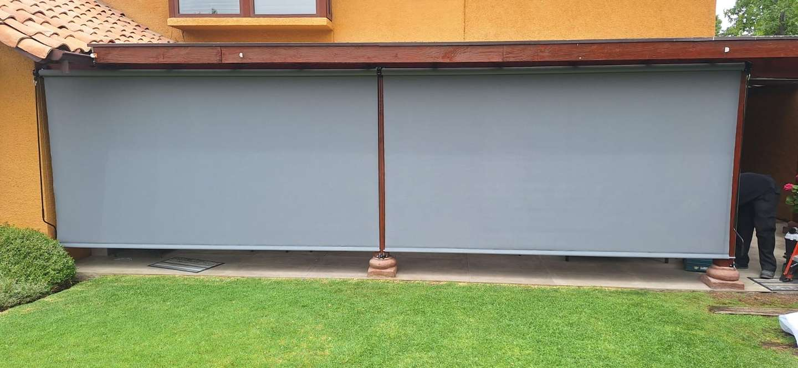
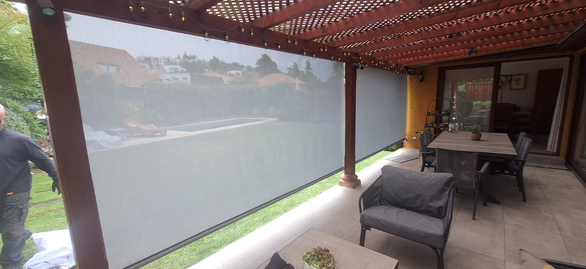
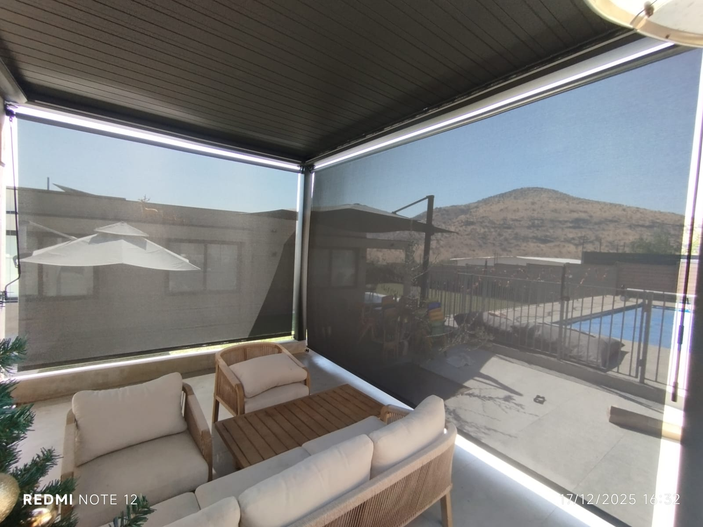

Toldo Vertical
Protección lateral contra el sol y el viento
Nuestros toldos verticales tipo screen te protegen del sol, el resplandor y el viento sin perder la visibilidad hacia el exterior. Ideales para terrazas, ventanales y fachadas. Aquí te mostramos sus principales características y algunos proyectos realizados.

Herrajes de acero inoxidable
Contamos con fijaciones a piso de acero inoxidable para mayor duracion del producto.

Resistente al viento
Sistema de guías laterales que mantiene la tela firme y estable.

Colores
Contamos con variedad de colores disponibles, todos con protección UV.
Algunos de nuestros proyectos





